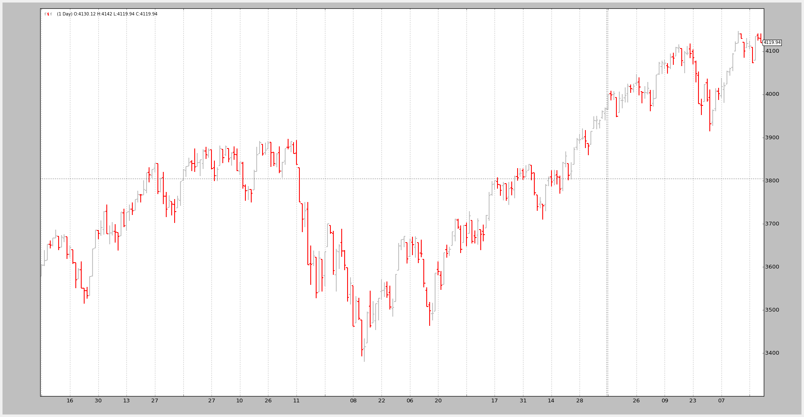

Note
pandas and its dependencies have to be installed
Supporting Pandas Dataframes seems to be of concern to lots of people, who rely on the already available parsing code for different data sources (including CSV) and other functionalities offered by Pandas.
The important declarations for the Datafeed.
class PandasData(feed.DataBase):
'''
The ``dataname`` parameter inherited from ``feed.DataBase`` is the pandas
DataFrame
'''
params = (
# Possible values for datetime (must always be present)
# None : datetime is the "index" in the Pandas Dataframe
# -1 : autodetect position or case-wise equal name
# >= 0 : numeric index to the colum in the pandas dataframe
# string : column name (as index) in the pandas dataframe
('datetime', None),
# Possible values below:
# None : column not present
# -1 : autodetect position or case-wise equal name
# >= 0 : numeric index to the colum in the pandas dataframe
# string : column name (as index) in the pandas dataframe
('open', -1),
('high', -1),
('low', -1),
('close', -1),
('volume', -1),
('openinterest', -1),
)
The above excerpt from the PandasData class shows the keys:
The
datanameparameter to the class during instantiation holds the Pandas DataframeThis parameter is inherited from the base class
feed.DataBaseThe new parameters have the names of the regular fields in the
DataSeriesand follow these conventions
datetime(default: None)
- None : datetime is the “index” in the Pandas Dataframe
- -1 : autodetect position or case-wise equal name
- >= 0 : numeric index to the colum in the pandas dataframe
- string : column name (as index) in the pandas dataframe
open,high,low,high,close,volume,openinterest(default: -1 for all of them)
- None : column not present
- -1 : autodetect position or case-wise equal name
- >= 0 : numeric index to the colum in the pandas dataframe
- string : column name (as index) in the pandas dataframe
A small sample should be able to load the standar 2006 sample, having been
parsed by Pandas, rather than directly by backtrader
Running the sample to use the exiting “headers” in the CSV data:
$ ./panda-test.py
--------------------------------------------------
Open High Low Close Volume OpenInterest
Date
2006-01-02 3578.73 3605.95 3578.73 3604.33 0 0
2006-01-03 3604.08 3638.42 3601.84 3614.34 0 0
2006-01-04 3615.23 3652.46 3615.23 3652.46 0 0
The same but telling the script to skip the headers:
$ ./panda-test.py --noheaders
--------------------------------------------------
1 2 3 4 5 6
0
2006-01-02 3578.73 3605.95 3578.73 3604.33 0 0
2006-01-03 3604.08 3638.42 3601.84 3614.34 0 0
2006-01-04 3615.23 3652.46 3615.23 3652.46 0 0
The 2nd run is using tells pandas.read_csv:
- To skip the first input row (
skiprowskeyword argument set to 1)- Not to look for a headers row (
headerkeyword argument set to None)
The backtrader support for Pandas tries to automatically detect if column
names have been used or else numeric indices and acts accordingly, trying to
offer a best match.
The following chart is the tribute to success. The Pandas Dataframe has been correctly loaded (in both cases)
The sample code for the test.
from __future__ import (absolute_import, division, print_function,
unicode_literals)
import argparse
import backtrader as bt
import backtrader.feeds as btfeeds
import pandas
def runstrat():
args = parse_args()
# Create a cerebro entity
cerebro = bt.Cerebro(stdstats=False)
# Add a strategy
cerebro.addstrategy(bt.Strategy)
# Get a pandas dataframe
datapath = ('../../datas/2006-day-001.txt')
# Simulate the header row isn't there if noheaders requested
skiprows = 1 if args.noheaders else 0
header = None if args.noheaders else 0
dataframe = pandas.read_csv(datapath,
skiprows=skiprows,
header=header,
parse_dates=True,
index_col=0)
if not args.noprint:
print('--------------------------------------------------')
print(dataframe)
print('--------------------------------------------------')
# Pass it to the backtrader datafeed and add it to the cerebro
data = bt.feeds.PandasData(dataname=dataframe)
cerebro.adddata(data)
# Run over everything
cerebro.run()
# Plot the result
cerebro.plot(style='bar')
def parse_args():
parser = argparse.ArgumentParser(
description='Pandas test script')
parser.add_argument('--noheaders', action='store_true', default=False,
required=False,
help='Do not use header rows')
parser.add_argument('--noprint', action='store_true', default=False,
help='Print the dataframe')
return parser.parse_args()
if __name__ == '__main__':
runstrat()
{kind=link}